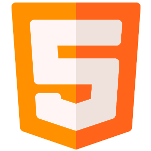
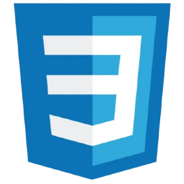
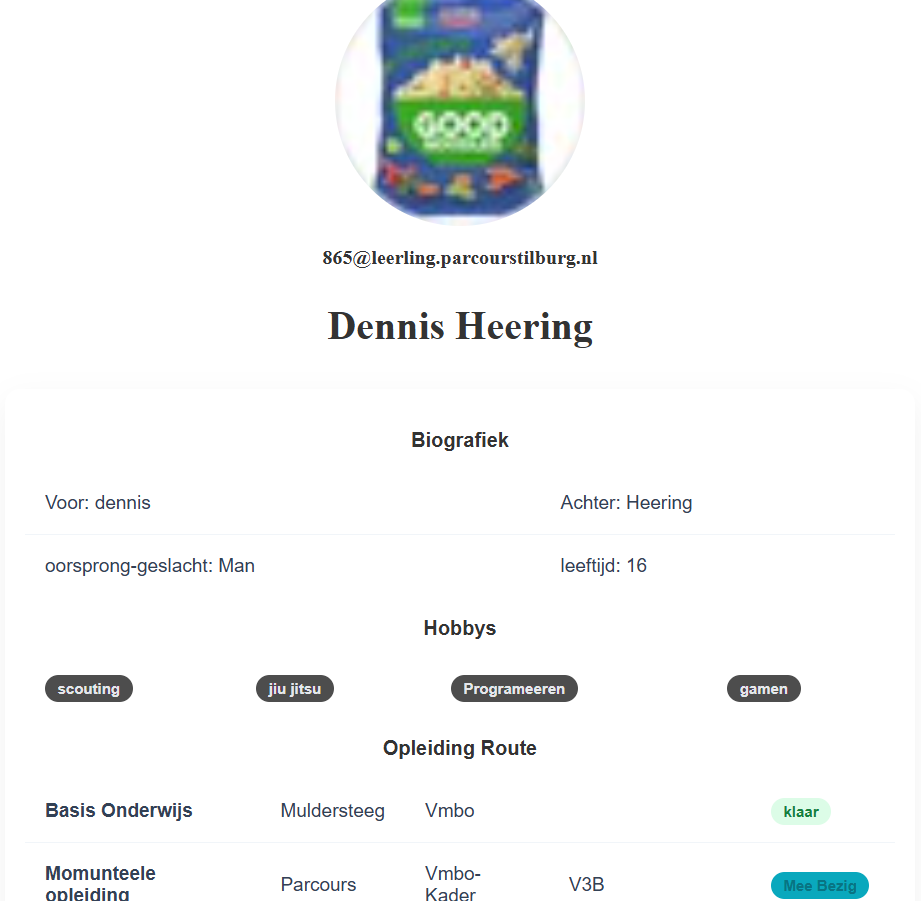
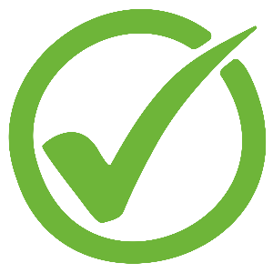

<style>
    :root {
        background-color: bisque;

    }

    h1 {
        color: brown;
        font-size: 4cap;
        text-align: center;
    }

    #Container {
        border-radius: 15px;
        background-color: burlywood;
        width: 80%;
        height: auto;
        margin-left: auto;
        margin-right: auto;
        margin-bottom: 10%;
    }

    #LanguageContainer {
        border-radius: 15px;
        background-color: rgb(163, 138, 105);
        width: 95%;
        height: auto;
        margin-left: auto;
        margin-right: auto;
        display: flex;
        flex-direction: row;
        flex-wrap: wrap;
        align-items: left;
    }

    #Language {
        margin: 10px;
        alt: Image;
        width: 35px;
        height: 35px;
    }

    #HorizontalContainer {
        border-radius: 15px;
        background-color: rgba(163, 138, 105, 0);
        width: 95%;
        height: auto;
        margin-left: auto;
        margin-right: auto;
        display: flex;
        flex-direction: row;
        flex-wrap: wrap;
        align-items: left;
    }

    #title1 {
        margin-left: 0%;
        font-size: 3cap;
        font-family: Impact, Haettenschweiler, 'Arial Narrow Bold', sans-serif;
        text-align: left;
        margin-left: 2%;
    }

    #Date {
        margin-left: 0%;
        font-size: 2.5cap;
        text-align: left;
        margin-left: 2%;
        margin-top: auto;
        margin-bottom: auto;
    }

    #Opdracht {
        color: rgb(76, 131, 31);
        font-size: 2cap;
        text-align: left;
        margin-left: 2%;
        margin-top: auto;
        margin-bottom: auto;
    }

    #title2 {
        margin-left: 0%;
        font-size: 3cap;
        font-family: Impact, Haettenschweiler, 'Arial Narrow Bold', sans-serif;
        text-align: center;
    }

    #description1 {
        margin-left: 0%;
        font-size: 3cap;
        text-align: left;
    }

    #status_Succsess {
        color: rgb(42, 134, 42);
        font-size: 2cap;
        text-align: left;
        margin-left: 2%;
        margin-top: auto;
        margin-bottom: auto;
    }

    #status_Warning {
        color: rgb(139, 108, 5);
        font-size: 2cap;
        text-align: left;
        margin-left: 2%;
        margin-top: auto;
        margin-bottom: auto;
    }
</style>

<html>
    <head>
        <docktype html>
        <title>Logboek Dennis</title>
    </head>
    <body>
        <button onclick="window.history.back()">Return</button>
        <div id="Container">
            <div id="HorizontalContainer">
                <p id="title1">Portifolio</p> <p id="Date">5/11/2026</p> <h2 id="Opdracht">Theorie opdracht 1</h2>
            </div>
            <div id="LanguageContainer">
                
                
                
            </div>
            
            
            <p id="title2">Doelstelling</p>
            <p id="description1" style="margin-left: 1%;">een kleine theorie opdracht van het maken van een pagina die laat zien wie je bent en over jezelf</p>
            <div id="HorizontalContainer">  <p id="status_Succsess">Gehaald</p> </div>
            
            <p id="title2">Zelf Reflectie</p>
            <p id="description1" style="margin-left: 1%;">het doelstelling is gehaald alleen kijk ik terug met het idee dat ik dit beter kon het ziet er een beetje staties/saai uit ik zal deze opdracht mischien herdoen in de toekomst</p>
            <div id="HorizontalContainer">  <p id="status_Succsess">Gehaald</p> </div>

            <p id="title2">Feedback</p>
            <p id="description1" style="margin-left: 1%;">docent had aangeraden om een navigatie menu toe tevoegen wat eigenlijk niet kan aangezien er teweinig paginas zijn en deze html alleen bedoeld was voor informative doeleinden</p>

            
            <div id="HorizontalContainer">
                <button style="margin-top: 5%; margin-bottom: 5%; margin-left: 0%; margin-right: 3%; border: 2px solid #8b5e3c; border-radius: 12px; background: #f7d6a3; color: #4a2f16; font-size: 1.5rem; cursor: pointer;" onclick="window.location.href='Files/Raw.txt'">View Raw</button>
                <button style="margin-top: 5%; margin-bottom: 5%; margin-left: 3%; margin-right: 3%; border: 2px solid #8b5e3c; border-radius: 12px; background: #f7d6a3; color: #4a2f16; font-size: 1.5rem; cursor: pointer;" onclick="window.location.href='https://865-parc.github.io/mij/'">View Live Page</button>
            </div>    

            <div id="HorizontalContainer" style="background-color: rgb(163, 138, 105); width: 100%;">
                <h2 style="color: white; font-size: 1.5cap;">Project Toezicht houder: </h2>
                <h2 style="color: white; font-size: 1.5cap;">Nienke Schagen-van zijl, Docent Media & 3d Vormgeving, Parcours Tilburg</h2>
            </div>
        </div>
    </body>
</html>